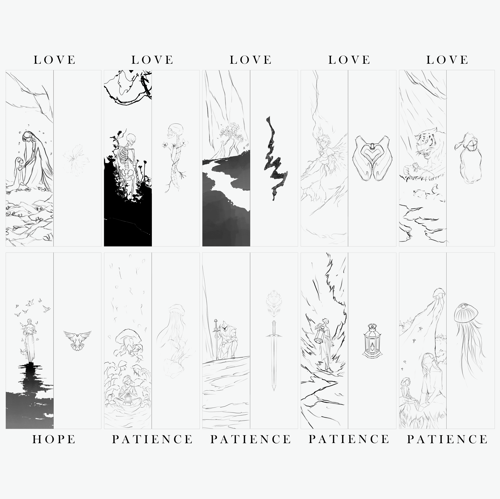
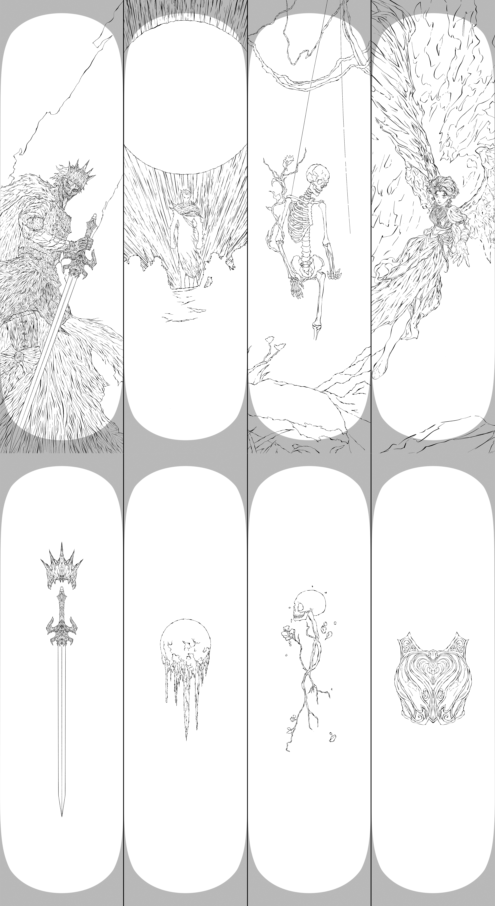
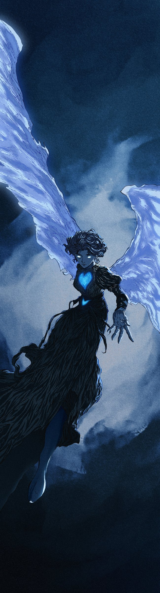

Process

Thumbnailing — Initial ideation and composition planning.

Tight Sketch — Refining the anatomy, details, and linework.

Color Comps — Exploring mood, palette, and atmosphere.
Mockup

Project

The other half of the diptych — wings of pale paper, a heart that lights the figure from inside.
The companion to Sin of Wrath. Love is rendered as something quieter but not gentler — the heart is the only light source, and it lights the body from the inside out. The wings are kept deliberately frail; they read more like documents than feathers.
The colour palette deliberately echoes Wrath’s violets, with cool blues instead of the warm pinks — so the two pieces, side by side, share a temperature but disagree on everything else.
Process

Thumbnailing — Initial ideation and composition planning.

Tight Sketch — Refining the anatomy, details, and linework.
Color Comps — Exploring mood, palette, and atmosphere.
Mockup